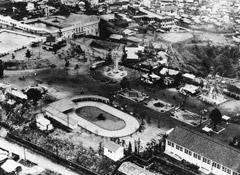
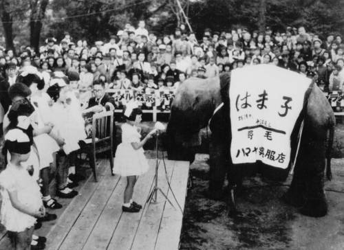
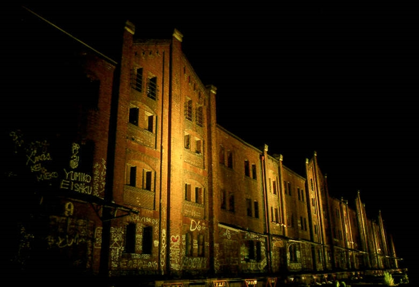
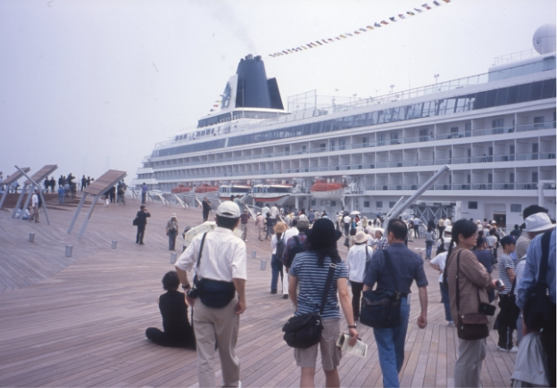
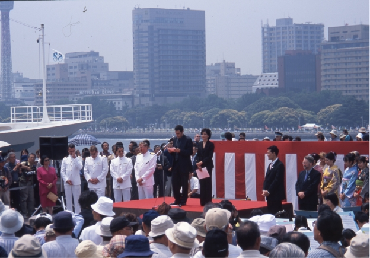

【資料と質問一覧】
資料1：野毛山動物園誕生(昭和26:1951年,4/1)


質問：野毛山動物園での思い出(他の動物園でも可)はありますか？
資料2：落書きがあり、立ち入り禁止だった頃の赤レンガ倉庫(昭和64:1989年)

質問：赤レンガ倉庫で印象に残っていること、体験などを教えてください。
資料3：現在の姿になった大さん橋(平成14:2002年)


質問：大さん橋に行ったことや、もしクルーズ船などに乗った記憶があれば教えてください。
【参考資料】
資料1：
野毛山動物園HP
資料2：
1980年代の横浜港界隈
資料3：
大さん橋のあゆみ